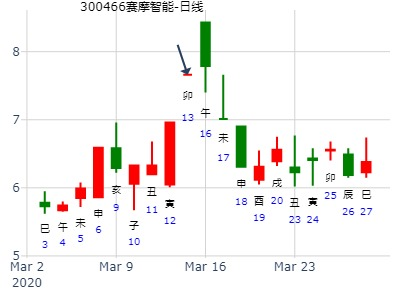

旺相飞神旬空，逢冲时论冲飞露伏。冲散飞神。
空下伏神，易于引拔，可以冲走旬空飞神时出来，也可以伏神值班时出来。
伏神被日月克，居然也能出。冲飞时亥水旬空旺，照样能冲飞露伏。
孟军 占事： 2010年1月25日——2月1日上证走势
起卦方式：手动摇卦 www.iqing.net 线上排盘系统
公历时间：2010年1月24日6时30分 星期日
干支：己丑年丁丑月 甲戌日 丁卯时 (旬空：申酉)
坎宫：泽火革
六神 伏 神 【本 卦】
玄武 ▅▅ ▅▅ 官鬼丁未土
白虎 ▅▅▅▅▅ 父母丁酉金
螣蛇 ▅▅▅▅▅ 兄弟丁亥水 世
勾陈 妻财戊午火 ▅▅▅▅▅ 兄弟己亥水
朱雀 ▅▅ ▅▅ 官鬼己丑土
青龙 ▅▅▅▅▅ 子孙己卯木 应
革,变。去旧迎新，君子豹变，小人革面。得革卦，再下个台阶。
占：2月内上证指数000001走势--by 入定观
公历：2023年1月31日21时3分 星期二
干支：壬寅年 癸丑月 己丑日 乙亥时 日空：午未
手动起卦 【本卦】
六神 伏 神 坎宫：泽火革
勾陈 ━ ━ 官鬼丁未
朱雀 ━━━ 父母丁酉
青龙 世 ━━━ 兄弟丁亥
玄武 妻财戊午 ━━━ 兄弟己亥
白虎 ━ ━ 官鬼己丑
螣蛇 应 ━━━ 子孙己卯

九戒 一周大盘 3月24-28日
公历时间：2014年3月21日16时11分
干 支：甲午年 丁卯月 辛卯日 丙申时
旬 空：辰巳 戌亥 (午未) 辰巳
坎宫：泽火革
六神 伏 神 【本 卦】
螣蛇 ▄▄ ▄▄ 官鬼丁未土
勾陈 ▄▄▄▄▄ 父母丁酉金
朱雀 ▄▄▄▄▄ 兄弟丁亥水 世
青龙 妻财戊午火 ▄▄▄▄▄ 兄弟己亥水
玄武 ▄▄ ▄▄ 官鬼己丑土
白虎 ▄▄▄▄▄ 子孙己卯木 应
吉卦。辰月看涨。英洛华到6月底走势。
时间: 2017-03-28 9时13分
干支: 丁酉年癸卯月甲寅日 (旬空: 子丑 )
革静卦
玄武 ▅▅ ▅▅ 官鬼未土
白虎 ▅▅▅▅▅ 父母酉金
腾蛇 ▅▅▅▅▅ 兄弟亥水 世
勾陈 妻财午火▅▅▅▅▅ 兄弟亥水
朱雀 ▅▅ ▅▅ 官鬼丑土
青龙 ▅▅▅▅▅ 子孙卯木 应
巳日乃孚，元亨利贞，悔亡。
莫非子孙值月得日扶，太旺，须得未月入墓才能涨？
汉钟精机到下周五。泽火革静卦。.md
时间: 2020-03-03 19时39分
干支: 庚子年戊寅月乙巳日 (旬空: 寅卯 )
革静卦
玄武 ▅▅ ▅▅ 官鬼未土
白虎 ▅▅▅▅▅ 父母酉金
腾蛇 ▅▅▅▅▅ 兄弟亥水 世
勾陈 妻财午火▅▅▅▅▅ 兄弟亥水
朱雀 ▅▅ ▅▅ 官鬼丑土
青龙 ▅▅▅▅▅ 子孙卯木 应

兄弟持世，但是日破。利财。
主帖标题: 今天急忙买入一股，明天会如何？--张三汉
3644 下周涨跌
公历时间：2020年3月13日14时38分
干 支：庚子年 己卯月 乙卯日 癸未时
旬 空：辰巳 申酉 子丑 申酉
神 煞：驿马─巳 桃花─子 日禄─卯 贵人─子，申
中国预测网纳甲六爻排盘
坎宫：泽火革
六神 伏 神 【本 卦】
玄武 ▄▄ ▄▄ 官鬼丁未土
白虎 ▄▄▄▄▄ 父母丁酉金
螣蛇 ▄▄▄▄▄ 兄弟丁亥水 世
勾陈 妻财戊午火 ▄▄▄▄▄ 兄弟己亥水
朱雀 ▄▄ ▄▄ 官鬼己丑土
青龙 ▄▄▄▄▄ 子孙己卯木 应
注：张三汉用补码，可能是300466，也可能是300644

3.11上证收盘走势
公历起卦时间：2021年3月10日18时16分 (电脑自动)
干支：辛丑年 辛卯月 丁巳日 己酉时 （日空：子丑）
神煞：驿马－亥 桃花－午 日禄－午 贵人－酉，亥
坎宫：泽火革
六神 伏神 本 卦
青龙 官鬼丁未土 ▅▅ ▅▅
玄武 父母丁酉金 ▅▅▅▅▅
白虎 兄弟丁亥水 ▅▅▅▅▅ 世
螣蛇 妻财戊午火 兄弟己亥水 ▅▅▅▅▅
勾陈 官鬼己丑土 ▅▅ ▅▅
朱雀 子孙己卯木 ▅▅▅▅▅ 应

主帖标题: 周易测3月18日中美会晤如何?
主帖标题: 周易测3月18日中美会晤如何
【环球网报道】当地时间3月10日，美国国务院在其网站发表声明称，美国国务卿布林肯及国家安全顾问沙利文将于3月18日在美国阿拉斯加安克雷奇与中共中央政治局委员、中央外事工作委员会办公室主任杨洁篪及国务委员兼外交部长王毅举行会晤，并将与中方就一系列问题展开对话。
针对这一消息,我摇卦一测
求测人：某人，女，癸丑(1973年)，手工指定(起卦方式)
占问事宜：要问的事情
公历：2021年3月11日8时37分，星期四。
神煞：驿马-申 桃花-卯 干禄-巳 贵人-丑、未
干支：辛丑年 辛卯月 戊午日 丙辰时 (卦身：酉)
主变卦 泽火革(坎宫) [空亡:子、丑]
朱雀 ▅▅ ▅▅ 官鬼丁未土
青龙 ▅▅▅▅▅ 父母丁酉金
玄武 ▅▅▅▅▅ 兄弟丁亥水 世
白虎 妻财戊午火 ▅▅▅▅▅ 兄弟己亥水
螣蛇 ▅▅ ▅▅ 官鬼己丑土
勾陈 ▅▅▅▅▅ 子孙己卯木 应
泽火革的意思为水火相息,为变革.象日,二女同居,其志不相得
意思是双方的利益和主张不一致,为志不相得.
此次应该没什么进展,变革,双方都需要调整.,需要较长时间,才能达成一致.
不过对股市有短暂的利好.
占事：002028未来半年走势？
公历起卦时间：2015年4月25日11时31分 (阿晖在线)
干支：乙未年 庚辰月 辛未日 甲午时 （日空：戌亥）
坎宫：泽火革 坎宫：泽火革
六神 伏神 本 卦 变 卦
腾蛇 官鬼丁未土 ▅▅ ▅▅ 官鬼丁未土 ▅▅ ▅▅
勾陈 父母丁酉金 ▅▅▅▅▅ 父母丁酉金 ▅▅▅▅▅
朱雀 兄弟丁亥水 ▅▅▅▅▅ 世 兄弟丁亥水 ▅▅▅▅▅ 世
青龙 妻财戊午火 兄弟己亥水 ▅▅▅▅▅ 兄弟己亥水 ▅▅▅▅▅
玄武 官鬼己丑土 ▅▅ ▅▅ 官鬼己丑土 ▅▅ ▅▅
白虎 子孙己卯木 ▅▅▅▅▅ 应 子孙己卯木 ▅▅▅▅▅ 应
初断：
巳月冲实亥水，压住午火，但同时巳为财来冲世，可能横盘。
午月财爻出伏，涨。申月世爻兄弟长生，易跌。
酉月子孙月破，易跌。
戌月合子孙，涨。压制飞神亥水。但又墓午火。
亥月跌。
子月财爻月破，跌。
主帖标题: 转发“个股卦例及反馈”
占事：至六月1日
排卦：元亨利贞网六爻在线排盘系统 https://www.china95.net
公历起卦时间：2021年4月9日20时45分 (电脑自动)
干支：辛丑年 壬辰月 丁亥日 庚戌时 （日空：午未）
神煞：驿马－巳 桃花－子 日禄－午 贵人－酉，亥
坎宫：泽火革
六神 伏神 本 卦
青龙 官鬼丁未土 ▅▅ ▅▅
玄武 父母丁酉金 ▅▅▅▅▅
白虎 兄弟丁亥水 ▅▅▅▅▅ 世
螣蛇 妻财戊午火 兄弟己亥水 ▅▅▅▅▅
勾陈 官鬼己丑土 ▅▅ ▅▅
朱雀 子孙己卯木 ▅▅▅▅▅ 应
革静卦,上证-5月上证指数?by?论坛
时间:?2015-05-01
干支:?乙未年庚辰月丁丑日?(旬空:?申酉?)
革静卦
青龙 ▅▅?▅▅ 官鬼未土
玄武 ▅▅▅▅▅ 父母酉金
白虎 ▅▅▅▅▅ 兄弟亥水 世
腾蛇 ▅▅▅▅▅ 兄弟亥水
勾陈 ▅▅?▅▅ 官鬼丑土
朱雀 ▅▅▅▅▅ 子孙卯木 应
5月大盘，泽火革静卦。.pdf
出生：没填 年 性别：男 占事：600130波导股份下周一涨跌
公历起卦时间：2015年5月30日11时5分 (电脑自动)
干支：乙未年 辛巳月 丙午日 甲午时 （日空：寅卯）
神煞：驿马－申 桃花－卯 日禄－巳 贵人－酉，亥
坎宫：泽火革
六神 伏神 本 卦
青龙 官鬼丁未土 ▅▅ ▅▅
玄武 父母丁酉金 ▅▅▅▅▅
白虎 兄弟丁亥水 ▅▅▅▅▅ 世
腾蛇 妻财戊午火 兄弟己亥水 ▅▅▅▅▅
勾陈 官鬼己丑土 ▅▅ ▅▅
朱雀 子孙己卯木 ▅▅▅▅▅ 应

风生水起 ?测大盘?7.8.9?月
公历时间：2015年6月29日17时50分
干 支：乙未年?壬午月?丙子日?丁酉时
旬 空：辰巳???申酉???申酉???辰巳??
坎宫：泽火革
六神? 伏 神 【本 卦】
青龙 ▄▄ ▄▄ 官鬼丁未土
玄武 ▄▄▄▄▄ 父母丁酉金
白虎 ▄▄▄▄▄ 兄弟丁亥水 世
螣蛇 妻财戊午火 ▄▄▄▄▄ 兄弟己亥水
勾陈 ▄▄ ▄▄ 官鬼己丑土
朱雀 ▄▄▄▄▄ 子孙己卯木 应
占事：300427红相电力明天涨跌
公历起卦时间：2016年6月1日20时52分 (电脑自动)
干支：丙申年 癸巳月 甲寅日 甲戌时 （日空：子丑）
神煞：驿马－申 桃花－卯 日禄－寅 贵人－丑，未
坎宫：泽火革
六神 伏神 本 卦
玄武 官鬼丁未土 ▅▅ ▅▅
白虎 父母丁酉金 ▅▅▅▅▅
腾蛇 兄弟丁亥水 ▅▅▅▅▅ 世
勾陈 妻财戊午火 兄弟己亥水 ▅▅▅▅▅
朱雀 官鬼己丑土 ▅▅ ▅▅
青龙 子孙己卯木 ▅▅▅▅▅ 应

611紫光国微自6.11乙酉四-6.15己丑星期一，何日有单日5%的上冲？
排卦：元亨利贞网六爻在线排盘系统 https://www.china95.net
公历起卦时间：2020年6月11日10时47分 (电脑自动)
干支：庚子年 壬午月 乙酉日 辛巳时 （日空：午未）
坎宫：泽火革 坎宫：泽火革
六神 伏神 本 卦 变 卦
玄武 官鬼丁未土 ▅▅ ▅▅ 官鬼丁未土 ▅▅ ▅▅
白虎 父母丁酉金 ▅▅▅▅▅ 父母丁酉金 ▅▅▅▅▅
螣蛇 兄弟丁亥水 ▅▅▅▅▅ 世 兄弟丁亥水 ▅▅▅▅▅ 世
勾陈 妻财戊午火 兄弟己亥水 ▅▅▅▅▅ 兄弟己亥水 ▅▅▅▅▅
朱雀 官鬼己丑土 ▅▅ ▅▅ 官鬼己丑土 ▅▅ ▅▅
青龙 子孙己卯木 ▅▅▅▅▅ 应 子孙己卯木 ▅▅▅▅▅ 应

主帖标题: 2020.06.23日上证指数擂台赛第二十三场第2局 Z方（日测）
replyreload += ',' + 12957222;数理卦
公历起卦时间：2020年6月22日20时17分 (手工指定)
干支：庚子年 壬午月 丙申日 戊戌时 （日空：辰巳）
坎宫：泽火革
六神 伏神 本 卦
青龙 官鬼丁未土 ▅▅ ▅▅
玄武 父母丁酉金 ▅▅▅▅▅
白虎 兄弟丁亥水 ▅▅▅▅▅ 世
螣蛇 妻财戊午火 兄弟己亥水 ▅▅▅▅▅
勾陈 官鬼己丑土 ▅▅ ▅▅
朱雀 子孙己卯木 ▅▅▅▅▅ 应

测601969海南矿业在2021.6.7-2021.6.11走势
公历起卦时间：2021年6月6日11时29分 (手工指定)
干支：辛丑年 甲午月 乙酉日 壬午时 （日空：午未）
坎宫：泽火革
六神 伏神 本 卦
玄武 官鬼丁未土 ▅▅ ▅▅
白虎 父母丁酉金 ▅▅▅▅▅
螣蛇 兄弟丁亥水 ▅▅▅▅▅ 世
勾陈 妻财戊午火 兄弟己亥水 ▅▅▅▅▅
朱雀 官鬼己丑土 ▅▅ ▅▅
青龙 子孙己卯木 ▅▅▅▅▅ 应

主帖标题: 以下股票6.8哪只股票收盘涨幅最大？
px
排卦：元亨利贞网六爻在线排盘系统 https://www.china95.net
公历起卦时间：2022年6月7日21时11分 (电脑自动)
干支：壬寅年 丙午月 辛卯日 己亥时 （日空：午未）
神煞：驿马－巳 桃花－子 日禄－酉 贵人－寅，午
坎宫：泽火革
六神 伏神 本 卦
螣蛇 官鬼丁未土 ▅▅ ▅▅
勾陈 父母丁酉金 ▅▅▅▅▅
朱雀 兄弟丁亥水 ▅▅▅▅▅ 世
青龙 妻财戊午火 兄弟己亥水 ▅▅▅▅▅
玄武 官鬼己丑土 ▅▅ ▅▅
白虎 子孙己卯木 ▅▅▅▅▅ 应
2021-07-13
风生水起。
上证指数8月30日-9月3日行情预测？
起卦时间：2010年08月29日20时24分起卦方式：电脑自动
干支：庚寅年 甲申月 辛亥日 戊戌时
旬空：午未 午未 寅卯 辰巳
六神 伏神 坎宫：泽火革
【本 卦】
滕蛇 ▅▅ ▅▅ 官鬼丁未土
勾陈 ▅▅▅▅▅ 父母丁酉金
朱雀 ▅▅▅▅▅ 兄弟丁亥水 世
青龙 妻财戊午火 ▅▅▅▅▅ 兄弟己亥水
玄武 ▅▅ ▅▅ 官鬼己丑土
白虎 ▅▅▅▅▅ 子孙己卯木 应
断：1、《革》为变革、之意，原意就是指商汤与周武王分别对已经腐败了的前一朝代进行武装。故本周必有变盘事件发生。
2、用神午火，休囚之极，说明目前指数点位已经处于极低状态，本周应该是不可再跌行情。
3、下周依次为子丑寅卯辰日，周三甲寅，应爻福神出空行权，还可化解亥水飞神对用神之克制。
4、综合判断：全周为震荡上涨行情。其中：周一、周二继续盘整；后三日上涨，周三为转折点，应该大涨。
300035中科电气8月11-115行情走势？
占事：300035中科电气8月11-115行情走势？
起卦方式：手动摇卦 易经股市论坛 在线排盘系统
公历时间：2013年8月10日17时29分
干 支：癸巳年 庚申月 戊申日 辛酉时
旬 空：午未 子丑 (寅卯) 子丑
坎宫：泽火革
六神 伏 神 【本 卦】
朱雀 ▄▄ ▄▄ 官鬼丁未土
青龙 ▄▄▄▄▄ 父母丁酉金
玄武 ▄▄▄▄▄ 兄弟丁亥水 世
白虎 妻财戊午火 ▄▄▄▄▄ 兄弟己亥水
螣蛇 ▄▄ ▄▄ 官鬼己丑土
勾陈 ▄▄▄▄▄ 子孙己卯木 应
长城汽车8月，泽火革静卦.md
时间: 2021-08-03 11时37分
干支: 辛丑年乙未月癸未日 (旬空: 申酉 )
革静卦
白虎 ▅▅ ▅▅ 官鬼未土
腾蛇 ▅▅▅▅▅ 父母酉金
勾陈 ▅▅▅▅▅ 兄弟亥水 世
朱雀 妻财午火▅▅▅▅▅ 兄弟亥水
青龙 ▅▅ ▅▅ 官鬼丑土
玄武 ▅▅▅▅▅ 子孙卯木 应
月卦：思源电气8月走势。泽火革静卦-晖
时间: 2021-08-06 0时41分
干支: 辛丑年乙未月丙戌日 (旬空: 午未 )
革静卦
青龙 ▅▅ ▅▅ 官鬼未土
玄武 ▅▅▅▅▅ 父母酉金
白虎 ▅▅▅▅▅ 兄弟亥水 世
腾蛇 妻财午火▅▅▅▅▅ 兄弟亥水
勾陈 ▅▅ ▅▅ 官鬼丑土
朱雀 ▅▅▅▅▅ 子孙卯木 应
2021-08-06
主帖标题: 明天个股涨跌
公历时间：2021年8月27日10时15分
干 支：辛丑年 丙申月 丁未日 乙巳时
旬 空：辰巳 辰巳 寅卯 寅卯
神 煞：驿马─巳 桃花─子 日禄─午 贵人─酉，亥
坎宫：泽火革
六神 伏 神 【本 卦】
青龙 ▄▄ ▄▄ 官鬼丁未土
玄武 ▄▄▄▄▄ 父母丁酉金
白虎 ▄▄▄▄▄ 兄弟丁亥水 世
螣蛇 妻财戊午火 ▄▄▄▄▄ 兄弟己亥水
勾陈 ▄▄ ▄▄ 官鬼己丑土
朱雀 ▄▄▄▄▄ 子孙己卯木 应
2200274622 9.73--------9.64跌
大盘春节前有没有行情？在线摇卦-王--大变革，政策180度大转弯，大放水
时间: 2024-09-17
干支: 甲辰年癸酉月甲申日 (旬空: 午未 )
革静卦
玄武 ▅▅ ▅▅ 官鬼未土
白虎 ▅▅▅▅▅ 父母酉金
腾蛇 ▅▅▅▅▅ 兄弟亥水 世
勾陈 妻财午火▅▅▅▅▅ 兄弟亥水
朱雀 ▅▅ ▅▅ 官鬼丑土
青龙 ▅▅▅▅▅ 子孙卯木 应
己日乃孚，元亨利贞，悔亡。
24日正好是己卯日。
出生：没填 年 性别：男 占事：600405动力源周4周5涨跌
排卦：元亨利贞网六爻在线排盘系统 http://www.china95.net
公历起卦时间：2014年10月15日11时59分 (电脑自动)
干支：甲午年 甲戌月 己未日 庚午时 （日空：子丑）
坎宫：泽火革
勾陈 官鬼丁未土 ▅▅ ▅▅
朱雀 父母丁酉金 ▅▅▅▅▅
青龙 兄弟丁亥水 ▅▅▅▅▅ 世
玄武 妻财戊午火 兄弟己亥水 ▅▅▅▅▅
白虎 官鬼己丑土 ▅▅ ▅▅
腾蛇 子孙己卯木 ▅▅▅▅▅ 应

主帖标题: 002815 下周高点
公历：2016年10月29日22时4分，星期六。
干支：丙申年 戊戌月 甲申日 乙亥时 (卦身：酉)
主变卦 泽火革(坎宫) [空亡:午、未]
玄武 ▅▅ ▅▅ 官鬼丁未土
白虎 ▅▅▅▅▅ 父母丁酉金
螣蛇 ▅▅▅▅▅ 兄弟丁亥水 世
勾陈 妻财戊午火 ▅▅▅▅▅ 兄弟己亥水
朱雀 ▅▅ ▅▅ 官鬼己丑土
青龙 ▅▅▅▅▅ 子孙己卯木 应
主帖标题: 2020年11月大盘涨跌卦--金眼牛
占事：2020年11月大盘涨跌？
公历起卦时间：2020年10月30日16时11分 (手工指定)
干支：庚子年 丙戌月 丙午日 丙申时 （日空：寅卯）
神煞：驿马－申 桃花－卯 日禄－巳 贵人－酉，亥
坎宫：泽火革
六神 伏神 本 卦
青龙 官鬼丁未土 ▅▅ ▅▅
玄武 父母丁酉金 ▅▅▅▅▅
白虎 兄弟丁亥水 ▅▅▅▅▅ 世
螣蛇 妻财戊午火 兄弟己亥水 ▅▅▅▅▅
勾陈 官鬼己丑土 ▅▅ ▅▅
朱雀 子孙己卯木 ▅▅▅▅▅ 应
预测11月6日(周四)上证指数下跌。
兄弟持世，不空不墓不破，跌。起卦方式：手工指定
公历时间：2008年11月5日22时2分
农历时间：戊子年 十月初八日亥时
干 支：戊子年 壬戌月 己酉日 乙亥时
旬 空：午未 子丑 寅卯 申酉
革静卦
勾陈 ▅▅ ▅▅ 官鬼未土
朱雀 ▅▅▅▅▅ 父母酉金
青龙 ▅▅▅▅▅ 兄弟亥水 世
玄武 妻财午火▅▅▅▅▅ 兄弟亥水
白虎 ▅▅ ▅▅ 官鬼丑土
腾蛇 ▅▅▅▅▅ 子孙卯木 应
戌日易与二六爻形成丑未戌三刑，而跌。
主帖标题: 随意聊聊：周易八卦预测股票的个人心得
请教站长解下面的卦总体是升还是跌，何时升何时跌，谢谢
占事：美国DOW道琼斯辛卯流年走势
公历起卦时间：2010年11月25日8时32分 (铜钱卦)
干支：庚寅年 丁亥月 己卯日 戊辰时 （日空：申酉）
坎宫：泽火革
六神 伏神 本 卦
勾陈 官鬼丁未土 ▅▅ ▅▅
朱雀 父母丁酉金 ▅▅▅▅▅
青龙 兄弟丁亥水 ▅▅▅▅▅ 世
玄武 妻财戊午火 兄弟己亥水 ▅▅▅▅▅
白虎 官鬼己丑土 ▅▅ ▅▅
腾蛇 子孙己卯木 ▅▅▅▅▅ 应
占事：2010年12月大盘涨跌？
公历时间：2010年11月30日16时17分 星期二
干支：庚寅年 丁亥月 甲申日 壬申时 (旬空：午未)
坎宫：泽火革
六神 伏 神 【本 卦】
玄武 ▅▅ ▅▅ 官鬼丁未土
白虎 ▅▅▅▅▅ 父母丁酉金
螣蛇 ▅▅▅▅▅ 兄弟丁亥水 世
勾陈 妻财戊午火 ▅▅▅▅▅ 兄弟己亥水
朱雀 ▅▅ ▅▅ 官鬼己丑土
青龙 ▅▅▅▅▅ 子孙己卯木 应
出生：没填 年 性别：男 占事：300103达刚路机近期涨跌
排卦：元亨利贞网六爻在线排盘系统 http://www.china95.net
公历起卦时间：2014年11月12日17时38分 (电脑自动)
干支：甲午年乙亥月丁亥日己酉时（日空：午未）
坎宫：泽火革
六神 伏神 本 卦
青龙 官鬼丁未土 ▅▅ ▅▅
玄武 父母丁酉金 ▅▅▅▅▅
白虎 兄弟丁亥水 ▅▅▅▅▅ 世
腾蛇 妻财戊午火 兄弟己亥水 ▅▅▅▅▅
勾陈 官鬼己丑土 ▅▅ ▅▅
朱雀 子孙己卯木 ▅▅▅▅▅ 应
测002919名臣健康在2019年11月份走势
公历起卦时间：2019年11月3日9时15分 (手工指定)
干支：己亥年 甲戌月 甲辰日 己巳时 （日空：寅卯）
坎宫：泽火革
六神 伏神 本 卦
玄武 官鬼丁未土 ▅▅ ▅▅
白虎 父母丁酉金 ▅▅▅▅▅
腾蛇 兄弟丁亥水 ▅▅▅▅▅ 世
勾陈 妻财戊午火 兄弟己亥水 ▅▅▅▅▅
朱雀 官鬼己丑土 ▅▅ ▅▅
青龙 子孙己卯木 ▅▅▅▅▅ 应
东方财富到元旦。泽火革静卦。
时间: 2022-11-06
干支: 壬寅年庚戌月癸亥日 (旬空: 子丑 )
革静卦
白虎 ▅▅ ▅▅ 官鬼未土
腾蛇 ▅▅▅▅▅ 父母酉金
勾陈 ▅▅▅▅▅ 兄弟亥水 世
朱雀 ▅▅▅▅▅ 兄弟亥水
青龙 ▅▅ ▅▅ 官鬼丑土
玄武 ▅▅▅▅▅ 子孙卯木 应
主帖标题: 明天股票财动 手摇卦
公历时间：2019年12月18日20时17分
干 支：己亥年 丙子月 己丑日 甲戌时
旬 空：辰巳 申酉 午未 申酉
坎宫：泽火革
六神 伏 神 【本 卦】
勾陈 ▄▄ ▄▄ 官鬼丁未土
朱雀 ▄▄▄▄▄ 父母丁酉金
青龙 ▄▄▄▄▄ 兄弟丁亥水 世
玄武 妻财戊午火 ▄▄▄▄▄ 兄弟己亥水
白虎 ▄▄ ▄▄ 官鬼己丑土
螣蛇 ▄▄▄▄▄ 子孙己卯木 应
占事：002408齐翔腾达二周涨跌？泽火革静卦。.md
时间: 2021-12-03 9时05分
干支: 辛丑年己亥月乙酉日辛巳时 (旬空: 午未 )
革静卦
玄武 ▅▅ ▅▅ 官鬼未土
白虎 ▅▅▅▅▅ 父母酉金
腾蛇 ▅▅▅▅▅ 兄弟亥水 世
勾陈 妻财午火▅▅▅▅▅ 兄弟亥水
朱雀 ▅▅ ▅▅ 官鬼丑土
青龙 ▅▅▅▅▅ 子孙卯木 应
子日兄弟旺相，跌。丑寅卯辰均看涨。